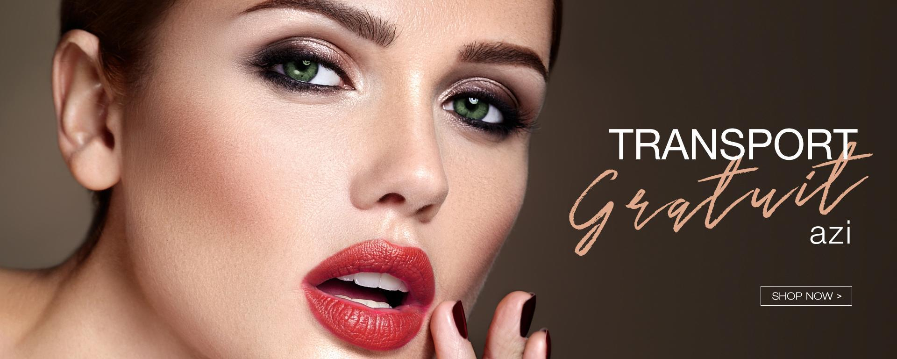
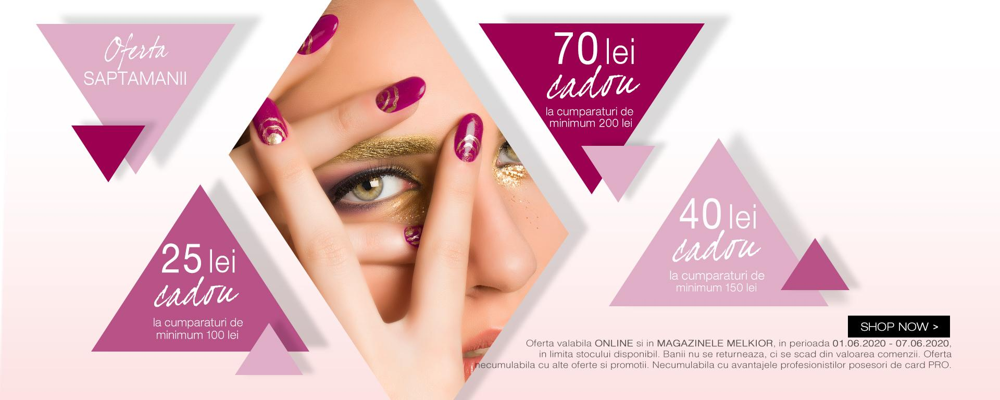
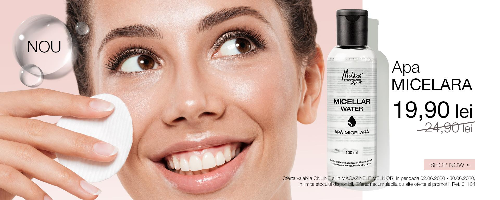
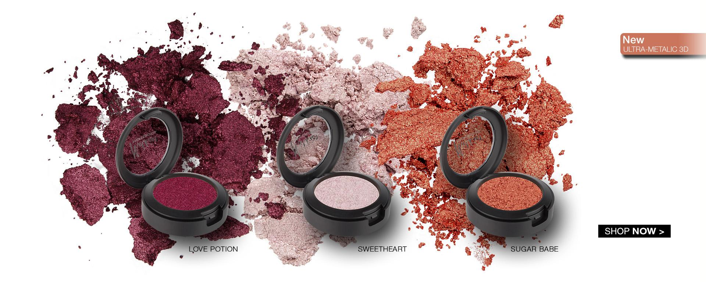
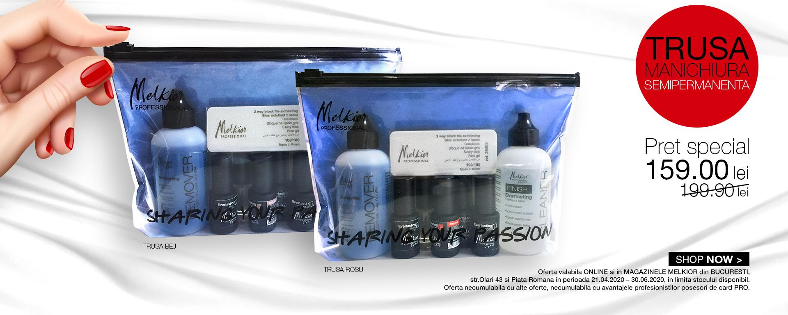

Cum sa iti ingrijesti tenul! Este foarte important sa-ti poti indentifica tipul de ten. Acest lucru iti permite sa iti ingrijesti tenul corect. De asemenea, alegerea gamei de cosmetice este la randul ei influentata de tipul de ten. Desi nici un ten nu seamana cu celalalt, majoritatea au caracteristici care le permite gruparea in unul din urmatoarele tipuri: ten uscat, ten normal, ten mixt ten gras.
Pentru a avea grija de pielea ta si pentru a o respecta, cel mai important este ca mai intai sa te asiguri ca folosesti produse create special pentru tipul tau de piele. Pielea uscata nu are aceleasi nevoi ca pielea grasa.
Anumite parti ale fetei (conturul ochilor, buzelor etc.) au o piele mai subtire, fragila. Aceste zone au nevoie de ingrijire speciala, mai ales conturul ochilor si buzele. Acestea sunt zonele mai sensibile ale fetei si au nevoie de atentie speciala.
Trebuie sa ai grija de tenul tau prin produsele de curatare pe care le folosesti. Pentru
a
nu-ti agresa tenul si pentru a-i respecta echilibrul natural, trebuie sa folosesti un
demachiant cu pH neutru, special creat pentru a-ti curata epiderma cu delicatete.
Pielea conturului ochilor este de 10 ori mai fina decat pielea de pe restul fetei. Alege o rutina speciala pentru demachierea acestei zone.
Foloseste un tratament exfoliant potrivit, odata sau de doua ori pe saptamana. Trebuie sa fie eficient insa delicat. Alege un produs de exfoliere cu pH neutru, care este perfect pentru a purifica si netezi pielea, in timp ce-i respecta echilibrul natural.
Dermul are in componenta 70% apa iar epidermul 15%. Pentru a pastra tenul bine hidratat, este important sa alegi o crema hidratanta care ofera echilibru nivelului de apa din piele. Poti folosi, de asemenea, si o masca hidratanta, inlaturand excesul cu un spray cu apa termala.
Pentru a evita riscul alergiilor care provin de la produse nepotrivite tenului tau, foloseste produse de machiaj hipoalergenice, special concepute pentru a intampina nevoile tuturor tipurilor de piele, chiar si a celei sensibile.
Oricare ar fi anotimpul, alege produse de ingrijire care sa includa si filtre solare. Acestea reduc efectele nocive ale soarelui, care accelereaza imbatranirea.
Poluarea, fumul, stresul... Toate acestea au efecte nocive asupra tenului. Foloseste inainte de a pleca de acasa produse de ingrijire care sa te protejeze de factorii de stres cotidieni si curata tenul cu grija atunci cand te intorci.
Imediat ce simti nevoia, foloseste o crema reparatoare pentru buze. Nu ezita sa reaplici pe aceasta zona sensibila, in mod special atunci cand e necesar.